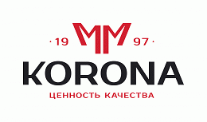

MITEX 2026 · Россия · Стенд 8D1102
КОРОНА, ООО
Карточка проверена 10 ноября 2026, 09:25 · Источник ↗ · Снимок оригинальной карточки ↗
О компании
Российская производственная компания «КОРОНА» Компания 'КОРОНА' основана в 1997 году. Ассортимент выпускаемой продукции ограничивался 20 моделями садово - паркового инвентаря. Модельный ряд постоянно расширялся и к 2002 году уже насчитывал более 200 наименований. В 2012 году был открыт новый производственно-складской комплекс с современным высокоточным оборудованием. Это позволило внедрить новые технологии, улучшить качество продукции, расширить ассортиментный ряд товаров и в 2013 году открыть новое направление - производство садовых и строительных тачек. ООО «Корона» в 2018 году запустило два новых проекта расширив тем самым производство до 6 направлений: 1. Садовый инструмент и инвентарь. 2. Полиуретановые колеса. 3. Садово - строительные тачки. 4. Штампы и пресс формы. 5. Культиваторы, мотоблоки, садовые измельчители и снегоуборщики от 3,5л.с. до 13л.с. 6. Услуги по обработке листового металла. Вектор развития компании направлен на постоянное увеличение доли отечественного сырья, оснастки и комплектующих в производстве, что в свою очередь позволяет: • Предлагать нашим клиентам лучшую цену на рынке. • Поддерживать высокое качество продукции • Соблюдать строгие сроки производства и отгрузок в сравнении с импортом готовой продукции другими компаниями. • Быть адаптивными к текущей ситуации на рынке и оставаться максимально гибкими к пожеланиям клиентов по изменениям в ассортименте выпускаемой продукции. • За счет высокой доли отечественного сырья, комплектующих и оснастки быть стабильными в планировании цен на продукцию.
Контакты
Все контактные сведения из карточки
Контакты Адрес: 606104, Россия, Нижегородская область, г. Павлово, ул. Аллея Ильича, д.43,литер Ч, офис 2 Веб-сайт: https://powerkorona.ru E-mail: sale@koronann.ru Телефон: +7(83171) 5-72-92
Все рубрики участника
Mitex - Рубрикатор
- 2. Садовая техника, инструмент, инвентарь, оборудование, расходные материалы и насосы
- 9. Компрессоры, генераторы, силовая техника
Зал
- Зал № 8
Участник выставки
- MITEX
Видео, каталоги и документы
В доступной карточке нет видео или документов. Смотрите сайт участника.